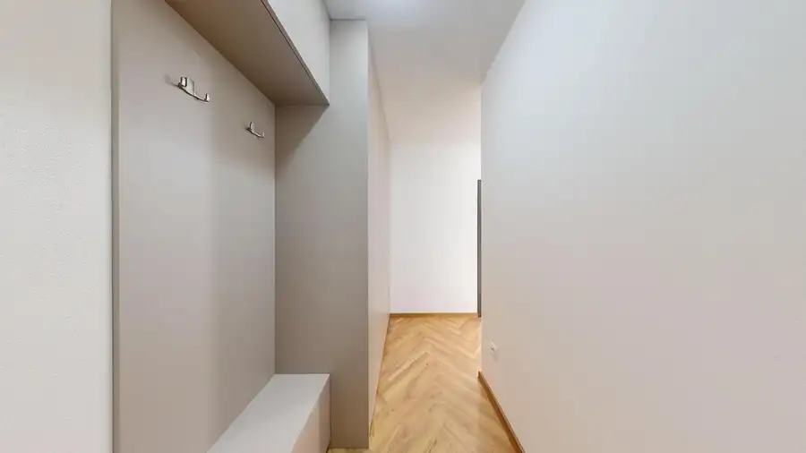
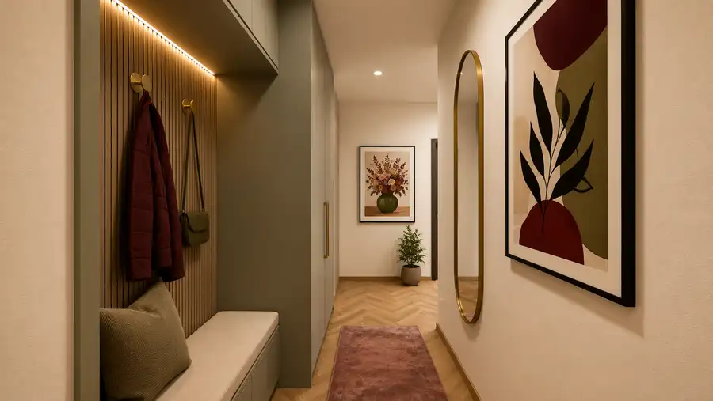
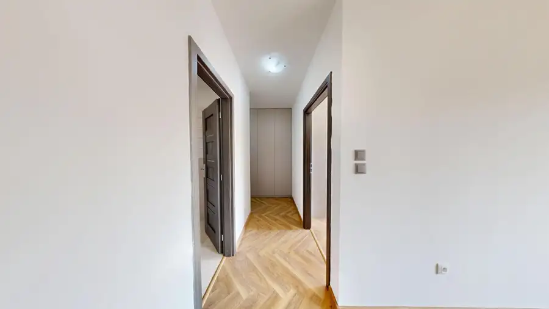
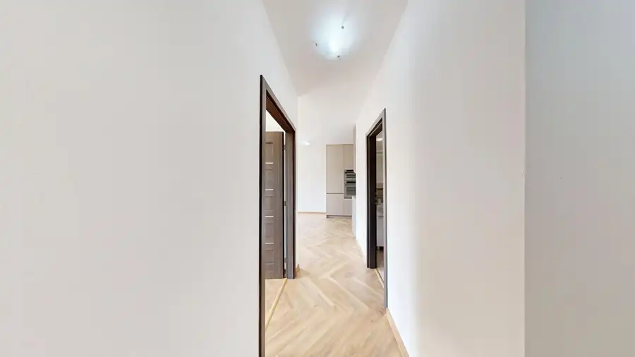
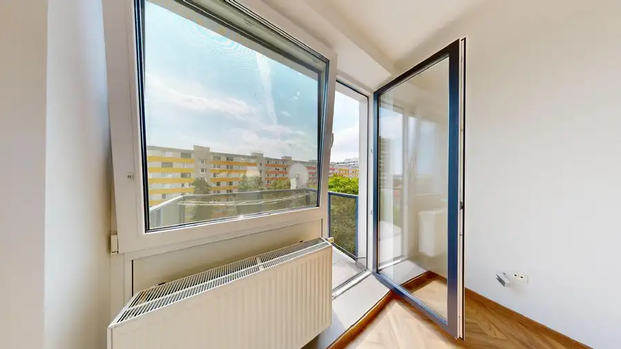

AZ. Na predaj moderný 2i byt v novostavbe Nový Polygón v Nitre
Nitra






- Dispozícia2-izbový
- Plocha46 m²
- Poschodie5. z 5
- StavNovostavba
- VlastníctvoOsobné
- Energetická triedaA
O nehnuteľnosti
AZ. Hľadáte moderné bývanie priamo v centre Nitry, kde máte všetko dôležité na dosah a zároveň si môžete užívať komfort novostavby? Tento 2-izbový byt v projekte Nový Polygón ponúka presne spojenie lokality, praktickej dispozície a moderného mestského bývania.Byt sa nachádza na 5. poschodí bytového domu s výťahom, vo vchode č. 17 a disponuje úžitkovou plochou 46,13 m². K bytu prislúcha balkón s výmerou 3 m² a pivničná kobka s výmerou 3,45 m².Interiér pôsobí moderne, vzdušne a vďaka dostatku prirodzeného svetla veľmi príjemne. Veľkou výhodou je premyslená dispozícia, ktorá jednotlivé metre využíva efektívne a zároveň zachováva pocit priestoru. Dispozícia:Byt má praktickú a funkčnú dispozíciu, ktorá pozostáva zo:– vstupnej chodby,– samostatnej spálne s výstupom na balkón,– balkóna– priestrannej kúpeľne s priestorom na práčku a sušičku,– otvorenej kuchyne spojenej s priestrannou obývacou izbou.K bytu prislúcha aj pivničná kobka s výmerou 3,45 m², ktorá poskytuje praktický dodatočný úložný priestor.Samotný byt má výmeru 46,13 m² a vďaka dobre navrhnutej dispozícii pôsobí príjemne, vzdušne a priestranne.Lokalita:Nový Polygón patrí vďaka svojej polohe medzi mimoriadne atraktívne miesta na bývanie v Nitre. Najväčším benefitom je bezprostredná blízkosť centra mesta – každodenný život tu môžete zvládnuť pohodlne aj bez neustáleho používania auta.V pešej dostupnosti máte centrum Nitry, obchody, služby, reštaurácie, kaviarne, školy, zdravotnú starostlivosť aj možnosti na šport a voľný čas. Lokalita je ideálna pre človeka, ktorý chce mať mestský život doslova na dosah a nechce strácať čas každodenným dochádzaním.Výborná dostupnosť do centra zároveň znamená jednoduché napojenie na ostatné časti Nitry a kompletnú občiansku vybavenosť v bezprostrednom okolí. Či už potrebujete vybaviť bežné nákupy, zájsť na večeru, stretnúť sa s priateľmi alebo vyraziť do mesta, množstvo miest máte dostupných v priebehu niekoľkých minút.Práve kombinácia novostavby, vyššieho poschodia, balkóna, výťahu a polohy priamo v centre Nitry robí z tejto nehnuteľnosti atraktívnu voľbu pre vlastné bývanie aj investíciu na prenájom.Ak hľadáte byt, pri ktorom nemusíte robiť kompromis medzi moderným bývaním a výbornou lokalitou, Nový Polygón je miesto, ktoré stojí za pozornosť.K bytu prislúcha aj pivničná kobka, ktorá je už zahrnutá v cene nehnuteľnosti.Ďalším benefitom je možnosť dokúpiť si vlastné parkovacie miesto. Kúpa parkovacieho miesta však nie je podmienkou kúpy bytu – nový majiteľ sa tak môže rozhodnúť podľa vlastných potrieb.Cena bytu vrátane pivničnej kobky: 206 990 € Parkovacie miesto: 20 000 € Vizualizácie majú ilustračný charakter a slúžia na lepšiu predstavu o možnostiach zariadenia a využitia priestoru. V prípade záujmu ma kontaktujte!Boris Eršek+421 907 478 412ersek@andelzachar.sk
Parametre
- Cena vrátane energií
- Nie
- Druh
- 2 izbový byt
- Dátum zverejnenia
- 02. 10. 2026
- Energetický certifikát budovy
- A
- Podlažie
- 5
- Počet izieb / miestností
- 2
- Počet nadzemných podlaží
- 5
- Rok kolaudácie
- 2022
- Rok výstavby
- 2021
- Stav nehnuteľnosti
- Novostavba
- Telekomunikácie
- Optická sieť
- Typ
- Predaj
- Typ konštrukcie
- Zmiešaná
- Vlastníctvo
- Osobné
- Úžitková plocha
- 46 m²